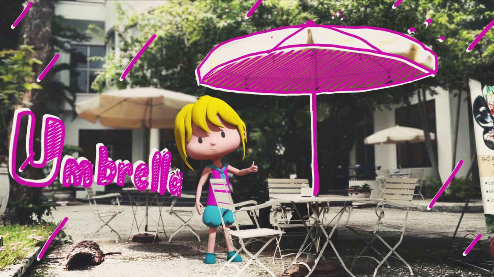
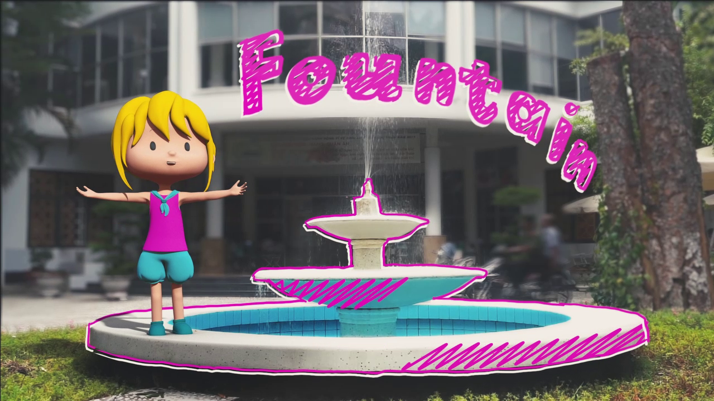
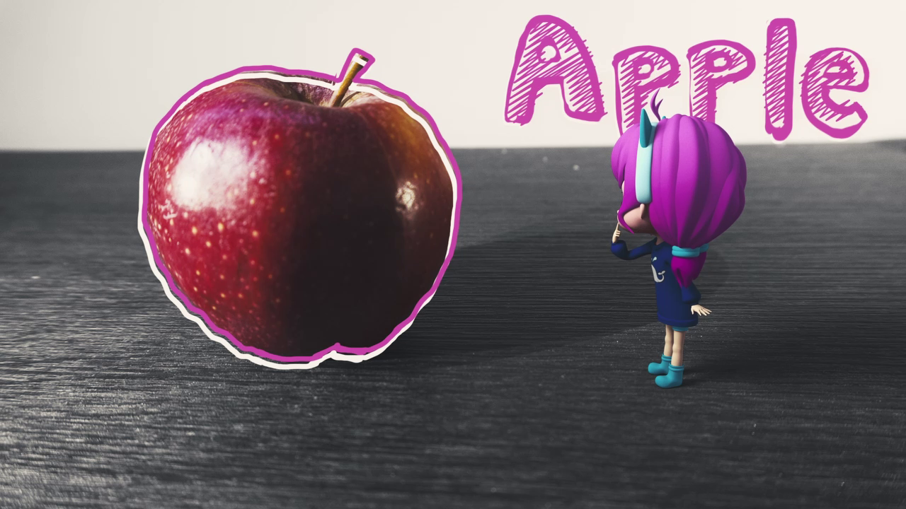
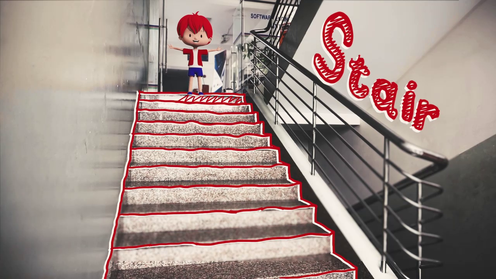
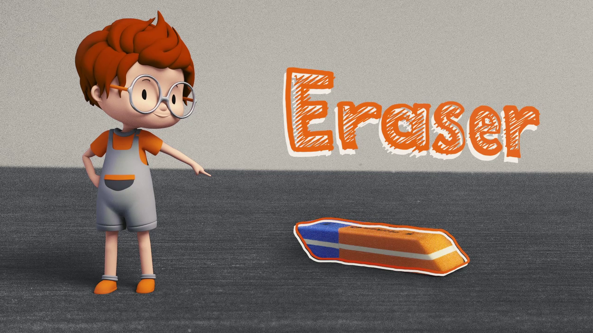
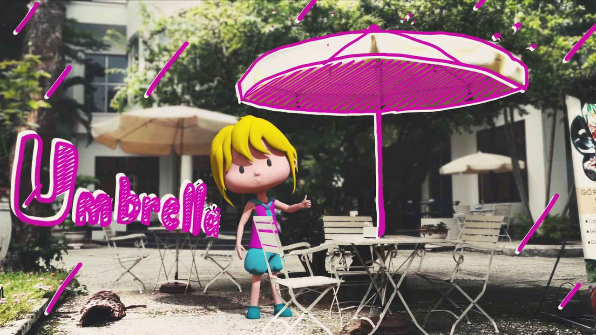
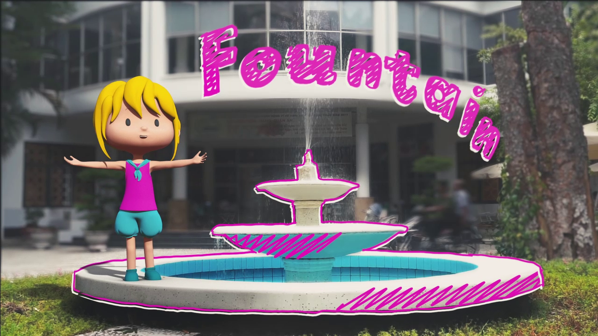
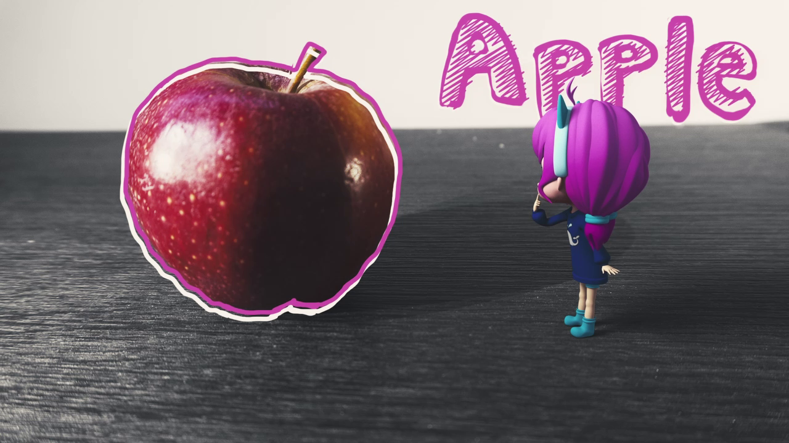
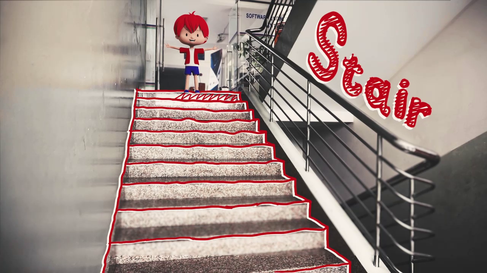
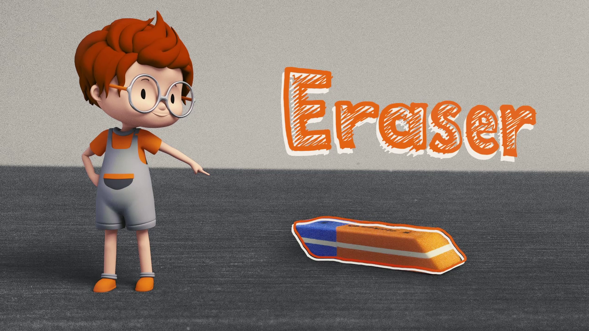

制作年月： 2018年6月
担当：
監督、脚本、ストーリーボード 、背景撮影、 編集
Illustrator / After Effect / Premiere
ALTA Mediaにおける 子供向けの英語の語彙教育動画シリーズの一つです。 キャラクター３Dモデルは ALTA Mediaの所有です。 語彙を学ぶなら本物を撮影した方が 子供に伝わりやすくなるのではないかと思って、 リアルな背景を撮影してから、３Dモデルを入れることにしました。
3人のチームで、自分がリーダーとして制作した動画です。 指定された英語の語彙により、脚本とストーリーボードを作って、 適した背景を探し、撮影しました。 チームメイトの完成させた３Dアニメーションと２Dモーションを含めて背景と一緒に合わせていきました。

 








